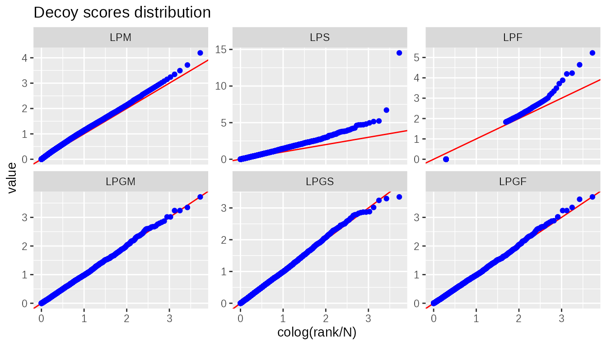
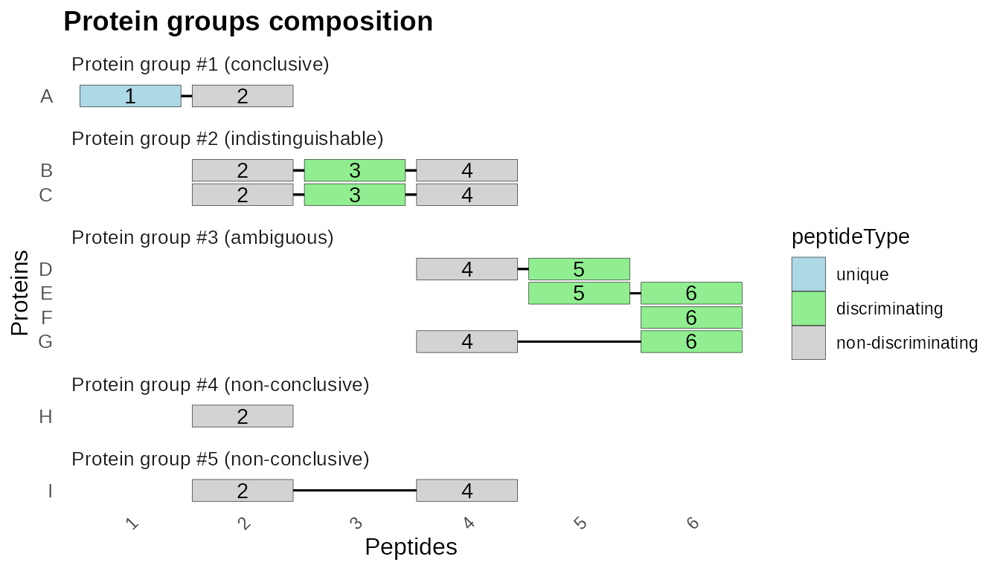
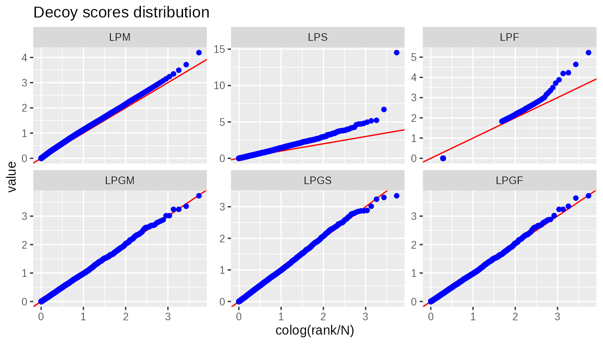

b10prot
b10prot.RmdIntroduction
This vignette shows how to build different proteomics identification
workflows using the b10prot package.
Loading PSMs
The initial input for the identification workflows presented here
consists of a list of Peptide-to-Spectrum Matches (PSMs) that must have
been previously generated using any search engine. This list of PSMs
must be available in a data.frame containing at least the
following columns:
psmScorerankisDecoypeptideRefproteinRef-
geneRef(optional)
We provide an iwf_load_psms function to facilitate
obtaining these PSMs from one or more mzIdentML (*.mzid) files,
which is a standardized file format by the HUPO Proteomics Standards
Initiative. To parse these mzid files, we rely on the
mzR package.
As an example dataset, we will use three mzid files obtained after searching three fractions of one tissue from this draft map of the human proteome. For this search, we used the MS-GF+ Search Engine within SearchGUI.
psms <-
# Load PSMs from mzIdentML files
iwf_load_psms(
path = paste0(DATA_PATH, "msgf"),
# We will use MS-GF+ spectral E-value for the target-decoy approach
psm_score = "MS.GF.SpecEValue") %>%
# Extract UniProt accession for convenience (optional)
mutate(proteinRef = str_split_i(DatabaseAccess, "\\|", 2)) %>%
# Decoy information was not specified in my mzid files
mutate(isDecoy = str_detect(proteinRef, "_REVERSED")) %>%
# Extract UniProt gene name (only if you are interested in this level)
mutate(geneRef = str_extract(DatabaseDescription, "GN=\\S+")) %>%
mutate(geneRef = str_sub(geneRef, 4)) %>%
mutate(geneRef = ifelse(isDecoy, paste0(geneRef, "_REVERSED"), geneRef)) %>%
# Only best PSM per spectrum
filter(rank == 1)
psms %>% glimpse()
#> Rows: 49,708
#> Columns: 29
#> $ spectrumID <chr> "index=9901", "index=12199", "index=13496", "…
#> $ chargeState <int> 3, 2, 3, 3, 2, 2, 3, 3, 3, 3, 3, 3, 3, 3, 3, …
#> $ rank <int> 1, 1, 1, 1, 1, 1, 1, 1, 1, 1, 1, 1, 1, 1, 1, …
#> $ passThreshold <lgl> TRUE, TRUE, TRUE, TRUE, TRUE, TRUE, TRUE, TRU…
#> $ experimentalMassToCharge <dbl> 1063.8254, 1141.6216, 994.1609, 1161.4554, 11…
#> $ calculatedMassToCharge <dbl> 1063.8251, 1141.6218, 994.1621, 1161.4556, 11…
#> $ sequence <chr> "EPVSVGTPSEGEGLGADGQEHKEDTFDVFR", "GVVGPGPAAL…
#> $ peptideRef <chr> "Pep_EPVSVGTPSEGEGLGADGQEHKEDTFDVFR", "Pep_GV…
#> $ modNum <int> 0, 0, 1, 6, 1, 0, 0, 0, 3, 1, 1, 0, 0, 0, 1, …
#> $ isDecoy <lgl> FALSE, FALSE, FALSE, FALSE, FALSE, FALSE, FAL…
#> $ post <chr> "Q", "G", "G", "G", "S", "S", "Q", "L", "E", …
#> $ pre <chr> "R", "R", "K", "K", "R", "R", "K", "K", "K", …
#> $ start <int> 1039, 8, 314, 38, 326, 326, 278, 63, 757, 293…
#> $ end <int> 1068, 36, 342, 64, 350, 350, 303, 91, 785, 31…
#> $ DatabaseAccess <chr> "sp|Q8IX01|SUGP2_HUMAN", "sp|P22059|OSBP1_HUM…
#> $ DBseqLength <int> 1082, 807, 561, 478, 353, 353, 589, 142, 851,…
#> $ DatabaseSeq <chr> "", "", "", "", "", "", "", "", "", "", "", "…
#> $ DatabaseDescription <chr> "sp|Q8IX01|SUGP2_HUMAN SURP and G-patch domai…
#> $ spectrum.title <chr> "Adult_Testis_bRP_Elite_68_f01.12299.12299.3"…
#> $ scan.number.s. <dbl> 12299, 14751, 16134, 11137, 7177, 8471, 9644,…
#> $ scan.start.time <chr> "3695.0874", "4370.828", "4756.3667", "3381.8…
#> $ acquisitionNum <dbl> 9901, 12199, 13496, 8811, 5099, 6312, 7412, 1…
#> $ MS.GF.RawScore <dbl> 326, 292, 282, 256, 319, 296, 217, 228, 222, …
#> $ MS.GF.DeNovoScore <dbl> 331, 297, 288, 261, 319, 296, 219, 232, 232, …
#> $ MS.GF.SpecEValue <dbl> 1.098553e-35, 3.951045e-35, 4.986274e-35, 2.2…
#> $ MS.GF.EValue <dbl> 2.428852e-28, 8.729901e-28, 1.101726e-27, 5.0…
#> $ psmScore <dbl> 1.098553e-35, 3.951045e-35, 4.986274e-35, 2.2…
#> $ proteinRef <chr> "Q8IX01", "P22059", "P49902", "P04004", "P226…
#> $ geneRef <chr> "SUGP2", "OSBP", "NT5C2", "VTN", "HNRNPA2B1",…Peptide identifications
From the list of PSMs, we obtain a list of peptides by selecting the best PSM for each peptide, and then we calculate peptide confidence scores using the target-decoy approach:
peptides <-
psms %>%
# Best PSM per peptide
iwf_psm2pep(lower_better = TRUE) %>%
# Calculate target-decoy approach metrics
target_decoy_approach(pepScore)
peptides %>% glimpse()
#> Rows: 27,498
#> Columns: 9
#> $ peptideRef <chr> "Pep_EPVSVGTPSEGEGLGADGQEHKEDTFDVFR", "Pep_GVVGPGPAALAALGGG…
#> $ pepScore <dbl> 1.098553e-35, 1.358987e-35, 4.986274e-35, 2.282557e-34, 2.5…
#> $ isDecoy <lgl> FALSE, FALSE, FALSE, FALSE, FALSE, FALSE, FALSE, FALSE, FAL…
#> $ decoys <int> 0, 0, 0, 0, 0, 0, 0, 0, 0, 0, 0, 0, 0, 0, 0, 0, 0, 0, 0, 0,…
#> $ targets <int> 1, 2, 3, 4, 5, 6, 8, 8, 9, 10, 11, 12, 13, 14, 15, 16, 17, …
#> $ pval <dbl> 6.423433e-05, 6.423433e-05, 6.423433e-05, 6.423433e-05, 6.4…
#> $ LP <dbl> 4.192233, 4.192233, 4.192233, 4.192233, 4.192233, 4.192233,…
#> $ FDR <dbl> 0, 0, 0, 0, 0, 0, 0, 0, 0, 0, 0, 0, 0, 0, 0, 0, 0, 0, 0, 0,…
#> $ qval <dbl> 0, 0, 0, 0, 0, 0, 0, 0, 0, 0, 0, 0, 0, 0, 0, 0, 0, 0, 0, 0,…If we are only interested in peptides, we can obtain the identified peptides by setting a peptide-level FDR threshold:
peptides %>%
filter(qval <= 0.01) %>%
global_fdr()
#> # A tibble: 1 × 3
#> Target Decoy `Global FDR (%)`
#> <int> <int> <dbl>
#> 1 11626 116 0.998Protein identifications
To obtain a list of protein identifications, we compute a protein-level score using the scores of the corresponding peptides and then apply a protein-level FDR. We use LPGF as the protein-level score using only unique peptides, i.e., peptides not shared by different proteins.
First, we need a data.frame of peptide-to-protein
relations, including the peptide-level scores from the previous section.
We obtain the peptide-to-protein relations from the initial PSMs and
then merge the peptide-level scores from the peptide list:
pep2prot <-
# Peptide-to-protein relations
iwf_pep2level(psms, levelRef = proteinRef) %>%
# Include peptide scores
inner_join(peptides, by = join_by(peptideRef))
pep2prot %>% glimpse()
#> Rows: 29,725
#> Columns: 11
#> $ peptideRef <chr> "Pep_AAAAAAAAAVSR", "Pep_AAAAAAAKNK", "Pep_AAAAAAALQAK", "P…
#> $ proteinRef <chr> "Q96JP5", "A8MW92", "P36578", "A6NIH7", "Q92859_REVERSED", …
#> $ shared <int> 1, 1, 1, 1, 1, 1, 1, 1, 1, 1, 1, 1, 1, 1, 1, 1, 2, 2, 1, 1,…
#> $ pepScore <dbl> 4.882813e-17, 8.691400e-08, 9.765627e-16, 9.065173e-19, 4.9…
#> $ isDecoy <lgl> FALSE, FALSE, FALSE, FALSE, TRUE, TRUE, FALSE, FALSE, FALSE…
#> $ decoys <int> 0, 424, 0, 0, 7510, 5628, 0, 0, 0, 6948, 0, 7039, 7628, 0, …
#> $ targets <int> 4736, 12041, 5947, 3308, 19427, 17519, 3778, 5003, 2770, 18…
#> $ pval <dbl> 6.423433e-05, 5.453494e-02, 6.423433e-05, 6.423433e-05, 9.6…
#> $ LP <dbl> 4.192232823, 1.263325133, 4.192232823, 4.192232823, 0.01559…
#> $ FDR <dbl> 0.00000000, 0.03521302, 0.00000000, 0.00000000, 0.38657538,…
#> $ qval <dbl> 0.00000000, 0.03521302, 0.00000000, 0.00000000, 0.38653559,…Now, we can collapse these relationships into a list of protein identifications with protein-level scores:
proteins <-
pep2prot %>%
# Only consider unique (i.e. not shared) peptides
filter(shared==1) %>%
# Calculate protein-level scores
lpg(proteinRef) %>%
# Calculate target-decoy approach metrics using the LPGF score
target_decoy_approach(LPGF, lower_better = FALSE)
proteins %>% glimpse()
#> Rows: 13,579
#> Columns: 19
#> $ proteinRef <chr> "A0AVT1", "A1L0T0", "A2RRP1", "A5YKK6", "A6NHR9", "O00410",…
#> $ isDecoy <lgl> FALSE, FALSE, FALSE, FALSE, FALSE, FALSE, FALSE, FALSE, FAL…
#> $ n <int> 10, 7, 7, 6, 7, 11, 8, 8, 8, 8, 8, 9, 6, 10, 8, 10, 7, 8, 7…
#> $ m <dbl> 9, 6, 7, 6, 6, 11, 6, 6, 8, 7, 8, 8, 6, 6, 8, 10, 6, 7, 6, …
#> $ LPM <dbl> 4.192233, 4.192233, 4.192233, 4.192233, 4.192233, 4.192233,…
#> $ LPS <dbl> 36.99811, 24.35836, 29.34563, 25.15340, 25.29808, 46.11456,…
#> $ LPF <dbl> 36.05800, 24.30830, 29.34563, 25.15340, 25.15340, 46.11456,…
#> $ LPGM <dbl> 3.192358, 3.347218, 3.347218, 3.414151, 3.347218, 3.150980,…
#> $ LPGS <dbl> 300, 300, 300, 300, 300, 300, 300, 300, 300, 300, 300, 300,…
#> $ LPGF <dbl> 300, 300, 300, 300, 300, 300, 300, 300, 300, 300, 300, 300,…
#> $ peptideRef <chr> "Pep_CLANLRPLLDSGTM+16GTK", "Pep_AAM+16GLGAR", "Pep_CSGALTV…
#> $ shared <int> 1, 1, 1, 1, 1, 1, 1, 1, 1, 1, 1, 1, 1, 1, 1, 1, 1, 1, 1, 1,…
#> $ pepScore <dbl> 5.559802e-13, 7.812501e-12, 9.765627e-16, 3.906251e-16, 8.3…
#> $ decoys <int> 0, 0, 0, 0, 0, 0, 0, 0, 0, 0, 0, 0, 0, 0, 0, 0, 0, 0, 0, 0,…
#> $ targets <int> 366, 366, 366, 366, 366, 366, 366, 366, 366, 366, 366, 366,…
#> $ pval <dbl> 9.425071e-05, 9.425071e-05, 9.425071e-05, 9.425071e-05, 9.4…
#> $ FDR <dbl> 0, 0, 0, 0, 0, 0, 0, 0, 0, 0, 0, 0, 0, 0, 0, 0, 0, 0, 0, 0,…
#> $ LP <dbl> 4.025715, 4.025715, 4.025715, 4.025715, 4.025715, 4.025715,…
#> $ qval <dbl> 0, 0, 0, 0, 0, 0, 0, 0, 0, 0, 0, 0, 0, 0, 0, 0, 0, 0, 0, 0,…And check whether the distribution of protein-level scores in the decoy proteins follows a uniform distribution. We can see that the LPGF scores perform as expected:
Finally, we can obtain the identified proteins by applying a protein-level FDR threshold:
proteins %>%
filter(qval <= 0.01) %>%
global_fdr()
#> # A tibble: 1 × 3
#> Target Decoy `Global FDR (%)`
#> <int> <int> <dbl>
#> 1 4248 42 0.989Gene identifications
Since we have used only unique peptides in the previous section, protein isoforms from the same gene that share the same peptide sequences would have been removed. To minimize the effect of this simplification, we will now consider peptides that are unique at the gene level. The steps are equivalent to those used in the protein identification workflow.
First, we need a data.frame of peptide-to-gene
relations, including the peptide-level scores from the previous section.
Once again, we obtain the peptide-to-gene relations from the initial
PSMs and then merge the peptide-level scores from the peptide list:
pep2gene <-
# Peptide-to-gene relations
iwf_pep2level(psms, levelRef = geneRef) %>%
# Include peptide scores
inner_join(peptides, by = join_by(peptideRef))
pep2gene %>% glimpse()
#> Rows: 29,703
#> Columns: 11
#> $ peptideRef <chr> "Pep_AAAAAAAAAVSR", "Pep_AAAAAAAKNK", "Pep_AAAAAAALQAK", "P…
#> $ geneRef <chr> "ZFP91", "PHF20L1", "RPL4", "UNC119B", "NEO1_REVERSED", "VA…
#> $ shared <int> 1, 1, 1, 1, 1, 1, 1, 1, 1, 1, 1, 1, 1, 1, 1, 1, 2, 2, 1, 1,…
#> $ pepScore <dbl> 4.882813e-17, 8.691400e-08, 9.765627e-16, 9.065173e-19, 4.9…
#> $ isDecoy <lgl> FALSE, FALSE, FALSE, FALSE, TRUE, TRUE, FALSE, FALSE, FALSE…
#> $ decoys <int> 0, 424, 0, 0, 7510, 5628, 0, 0, 0, 6948, 0, 7039, 7628, 0, …
#> $ targets <int> 4736, 12041, 5947, 3308, 19427, 17519, 3778, 5003, 2770, 18…
#> $ pval <dbl> 6.423433e-05, 5.453494e-02, 6.423433e-05, 6.423433e-05, 9.6…
#> $ LP <dbl> 4.192232823, 1.263325133, 4.192232823, 4.192232823, 0.01559…
#> $ FDR <dbl> 0.00000000, 0.03521302, 0.00000000, 0.00000000, 0.38657538,…
#> $ qval <dbl> 0.00000000, 0.03521302, 0.00000000, 0.00000000, 0.38653559,…Now, we can collapse these relationships into a list of gene identifications with gene-level scores:
genes <-
pep2gene %>%
# Only consider unique (i.e. not shared) peptides
filter(shared==1) %>%
# Calculate gene-level scores
lpg(geneRef) %>%
# Calculate target-decoy approach metrics using the LPGF score
target_decoy_approach(LPGF, lower_better = FALSE)
genes %>% glimpse()
#> Rows: 13,552
#> Columns: 19
#> $ geneRef <chr> "A2M", "AARS", "ABAT", "ACAA2", "ACAT1", "ACLY", "ACO1", "A…
#> $ isDecoy <lgl> FALSE, FALSE, FALSE, FALSE, FALSE, FALSE, FALSE, FALSE, FAL…
#> $ n <int> 12, 9, 8, 10, 9, 10, 8, 11, 11, 6, 6, 8, 6, 10, 9, 69, 7, 7…
#> $ m <dbl> 12, 9, 6, 10, 9, 9, 7, 11, 10, 6, 6, 7, 6, 8, 9, 61, 7, 7, …
#> $ LPM <dbl> 4.192233, 4.192233, 4.192233, 4.192233, 4.192233, 4.192233,…
#> $ LPS <dbl> 50.30679, 37.73010, 24.49706, 41.92233, 36.88500, 38.09116,…
#> $ LPF <dbl> 50.30679, 37.73010, 23.92295, 41.92233, 36.88500, 37.73010,…
#> $ LPGM <dbl> 3.113205, 3.238102, 3.289240, 3.192358, 3.238102, 3.192358,…
#> $ LPGS <dbl> 300.00000, 300.00000, 15.95459, 300.00000, 300.00000, 300.0…
#> $ LPGF <dbl> 300, 300, 300, 300, 300, 300, 300, 300, 300, 300, 300, 300,…
#> $ peptideRef <chr> "Pep_DLTGFPGPLNDQDNEDCLNR", "Pep_AVFDETYPDPVR", "Pep_CLEEVE…
#> $ shared <int> 1, 1, 1, 1, 1, 1, 1, 1, 1, 1, 1, 1, 1, 1, 1, 1, 1, 1, 1, 1,…
#> $ pepScore <dbl> 1.521663e-15, 1.464844e-16, 3.906251e-15, 2.723810e-29, 1.8…
#> $ decoys <int> 0, 0, 0, 0, 0, 0, 0, 0, 0, 0, 0, 0, 0, 0, 0, 0, 0, 0, 0, 0,…
#> $ targets <int> 367, 367, 367, 367, 367, 367, 367, 367, 367, 367, 367, 367,…
#> $ pval <dbl> 9.444654e-05, 9.444654e-05, 9.444654e-05, 9.444654e-05, 9.4…
#> $ FDR <dbl> 0, 0, 0, 0, 0, 0, 0, 0, 0, 0, 0, 0, 0, 0, 0, 0, 0, 0, 0, 0,…
#> $ LP <dbl> 4.024814, 4.024814, 4.024814, 4.024814, 4.024814, 4.024814,…
#> $ qval <dbl> 0, 0, 0, 0, 0, 0, 0, 0, 0, 0, 0, 0, 0, 0, 0, 0, 0, 0, 0, 0,…And check whether the distribution of gene-level scores in the decoy genes follows a uniform distribution. We can see that the LPGF scores perform as expected:

Finally, we can obtain the identified genes by applying a gene-level FDR threshold:
genes %>%
filter(qval <= 0.01) %>%
global_fdr()
#> # A tibble: 1 × 3
#> Target Decoy `Global FDR (%)`
#> <int> <int> <dbl>
#> 1 4249 42 0.988Protein groups
Although working at the gene level reduces the number of shared peptide sequences, we may still remove peptides whose sequences are shared between proteins from different genes. To avoid this problem, we can build groups of proteins that share peptide sequences and report a list of protein groups passing a protein group-level FDR threshold.
To build these protein groups, we use the PAnalyzer algorithm. An example is included with this package:
data(example_panalyzer, package = "b10prot")
plot_groups(example_panalyzer, groupRefs = 1:5)
PAnalyzer receives as input a data.frame with
peptide-to-protein relations and returns another data.frame
that includes peptide-to-protein-to-group relations along with the
corresponding peptide and protein types:
pep2prot2group <-
pep2prot %>%
iwf_grouping()
pep2prot2group %>%
summary()
#> # A tibble: 4 × 5
#> Type TargetProteins DecoyProteins TargetGroups DecoyGroups
#> <chr> <int> <int> <int> <int>
#> 1 ambiguous 26 NA 2 NA
#> 2 conclusive 8155 5300 8155 5300
#> 3 indistinguishable 528 320 203 126
#> 4 non-conclusive 335 142 335 142From these relations, we can obtain the list of protein group identifications with their corresponding scores:
groups <-
pep2prot2group %>%
# Instead of iwf_pep2level() we use iwf_pep2group() to retain the list of proteins within each group
iwf_pep2group() %>%
# Only consider peptides unique to one group (this also removes non-conclusice proteins)
filter(shared==1) %>%
# Calculate protein group-level scores
lpg(groupRef) %>%
# Calculate target-decoy approach metrics using the LPGF score
target_decoy_approach(LPGF, lower_better = FALSE)
groups %>% filter(m>1) %>% glimpse()
#> Rows: 2,326
#> Columns: 27
#> $ groupRef <dbl> 17, 28, 32, 68, 73, 81, 83, 145, 183, 243, 289, 299, 301…
#> $ isDecoy <lgl> FALSE, FALSE, FALSE, FALSE, FALSE, FALSE, FALSE, FALSE, …
#> $ n <int> 7, 10, 6, 8, 12, 7, 7, 6, 35, 9, 69, 50, 9, 11, 6, 8, 15…
#> $ m <dbl> 7, 10, 6, 7, 10, 7, 7, 6, 34, 6, 61, 45, 9, 8, 6, 7, 13,…
#> $ LPM <dbl> 4.192233, 4.192233, 4.192233, 4.192233, 4.192233, 4.1922…
#> $ LPS <dbl> 29.34563, 39.00168, 25.15340, 30.15675, 44.63238, 29.345…
#> $ LPF <dbl> 29.34563, 39.00168, 25.15340, 29.34563, 41.92233, 29.345…
#> $ LPGM <dbl> 3.347218, 3.192358, 3.414151, 3.289240, 3.113205, 3.3472…
#> $ LPGS <dbl> 300.00000, 300.00000, 300.00000, 300.00000, 300.00000, 3…
#> $ LPGF <dbl> 300, 300, 300, 300, 300, 300, 300, 300, 300, 300, 300, 3…
#> $ peptideRef <chr> "Pep_EVVSLQTSLEQK", "Pep_LDAESLVK", "Pep_EFSLDVGYER", "P…
#> $ proteinRef <chr> "Q8NDV3", "P42858", "P61158", "P50453", "Q8IX01", "P2196…
#> $ peptideType <chr> "unique", "unique", "unique", "non-significant", "unique…
#> $ proteinType <chr> "conclusive", "conclusive", "conclusive", "conclusive", …
#> $ shared <int> 1, 1, 1, 1, 1, 1, 1, 1, 1, 1, 1, 1, 1, 1, 1, 1, 1, 1, 1,…
#> $ pepScore <dbl> 9.765627e-17, 1.562500e-11, 5.859376e-14, 3.425863e-07, …
#> $ decoys <int> 0, 0, 0, 0, 0, 0, 0, 0, 0, 0, 0, 0, 0, 0, 0, 0, 0, 0, 0,…
#> $ targets <int> 370, 370, 370, 370, 370, 370, 370, 370, 370, 370, 370, 3…
#> $ pval <dbl> 9.214891e-05, 9.214891e-05, 9.214891e-05, 9.214891e-05, …
#> $ FDR <dbl> 0, 0, 0, 0, 0, 0, 0, 0, 0, 0, 0, 0, 0, 0, 0, 0, 0, 0, 0,…
#> $ discPeptides <int> 0, 0, 0, 0, 0, 0, 0, 0, 0, 0, 0, 0, 0, 0, 0, 0, 0, 0, 4,…
#> $ totalPeptides <int> 8, 10, 6, 8, 12, 7, 7, 6, 35, 9, 69, 50, 9, 11, 6, 8, 15…
#> $ proteinCount <int> 1, 1, 1, 1, 1, 1, 1, 1, 1, 1, 1, 1, 1, 1, 1, 1, 1, 1, 8,…
#> $ proteinRefs <chr> "Q8NDV3", "P42858", "P61158", "P50453", "Q8IX01", "P2196…
#> $ proteinMaster <chr> "Q8NDV3", "P42858", "P61158", "P50453", "Q8IX01", "P2196…
#> $ LP <dbl> 4.03551, 4.03551, 4.03551, 4.03551, 4.03551, 4.03551, 4.…
#> $ qval <dbl> 0, 0, 0, 0, 0, 0, 0, 0, 0, 0, 0, 0, 0, 0, 0, 0, 0, 0, 0,…In a manner equivalent to the protein or gene identification workflow, we can test the score distribution of the decoy protein groups:

And also report a list of groups passing a protein group-level FDR threshold:
groups %>%
filter(qval <= 0.01) %>%
global_fdr()
#> # A tibble: 1 × 3
#> Target Decoy `Global FDR (%)`
#> <int> <int> <dbl>
#> 1 4386 43 0.980Refined FDR
In the identification workflows presented above, we have used the traditional FDR estimation. However, newer FDR estimation methods based on a higher-level (e.g., protein) target-decoy competitive approach can improve sensitivity. This package allows you to compute these FDRs as long as decoy and target identifications share a common name with an optional affix (prefix or suffix).
refined_genes <-
pep2gene %>%
# Only consider unique (i.e. not shared) peptides
filter(shared==1) %>%
# Calculate gene-level scores
lpg(geneRef) %>%
# Calculate refined FDRs using the LPGF score
refined_fdr(geneRef, LPGF, lower_better = FALSE, affix = "_REVERSED")
refined_genes %>%
select(geneRef, isDecoy, LPGF, FDRn, FDRp, FDRr, to, do, td, tb, db) %>%
glimpse()
#> Rows: 13,552
#> Columns: 11
#> $ geneRef <chr> "A2M", "AARS", "ABAT", "ACAA2", "ACAT1", "ACLY", "ACO1", "ACO2…
#> $ isDecoy <lgl> FALSE, FALSE, FALSE, FALSE, FALSE, FALSE, FALSE, FALSE, FALSE,…
#> $ LPGF <dbl> 300, 300, 300, 300, 300, 300, 300, 300, 300, 300, 300, 300, 30…
#> $ FDRn <dbl> 0, 0, 0, 0, 0, 0, 0, 0, 0, 0, 0, 0, 0, 0, 0, 0, 0, 0, 0, 0, 0,…
#> $ FDRp <dbl> 0, 0, 0, 0, 0, 0, 0, 0, 0, 0, 0, 0, 0, 0, 0, 0, 0, 0, 0, 0, 0,…
#> $ FDRr <dbl> 0, 0, 0, 0, 0, 0, 0, 0, 0, 0, 0, 0, 0, 0, 0, 0, 0, 0, 0, 0, 0,…
#> $ to <int> 367, 367, 367, 367, 367, 367, 367, 367, 367, 367, 367, 367, 36…
#> $ do <int> 0, 0, 0, 0, 0, 0, 0, 0, 0, 0, 0, 0, 0, 0, 0, 0, 0, 0, 0, 0, 0,…
#> $ td <int> 0, 0, 0, 0, 0, 0, 0, 0, 0, 0, 0, 0, 0, 0, 0, 0, 0, 0, 0, 0, 0,…
#> $ tb <int> 0, 0, 0, 0, 0, 0, 0, 0, 0, 0, 0, 0, 0, 0, 0, 0, 0, 0, 0, 0, 0,…
#> $ db <int> 0, 0, 0, 0, 0, 0, 0, 0, 0, 0, 0, 0, 0, 0, 0, 0, 0, 0, 0, 0, 0,…And finally, use the refined FDR as a threshold for reported identifications:
refined_genes %>%
filter(FDRr <= 0.01) %>%
global_fdr()
#> # A tibble: 1 × 3
#> Target Decoy `Global FDR (%)`
#> <int> <int> <dbl>
#> 1 4282 66 1.54